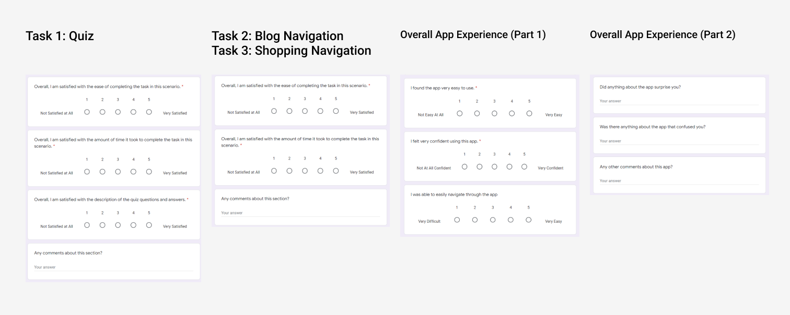
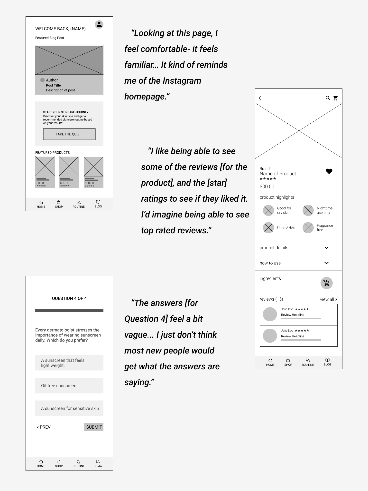
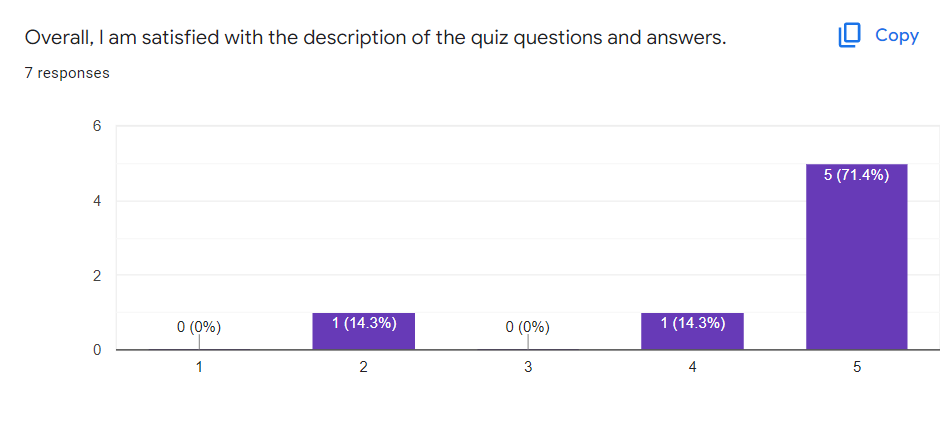

Usability Testing
Our usability testing was very insightful and helped to reaffirm certain qualities about our app. For testing, we interviewed seven users of varying levels of expertise in skincare. We asked users some questions about what type of apps they used, familiarity with skincare and whether or not they did online shopping. We then asked the user to perform some tasks followed by a questionnaire after each task and a questionnaire about their overall experience with the app. We utilized the script from the Rocket Surgery Made Easy website and edited it to fit with our app. For the questionnaire we used the questions from the After Scenario Questionnaire and adjusted those to fit our app as well. The questionnaire for our user testing can be found below.
Changes in Protocols
After our first user test we found that the user wanted to access filters when in the shopping tab. This was different to what we had expected. We expected users to click the product labeled “Recommended Product” or scroll through the products but the filters button was the first thing they clicked on. After the first test we decided to add filters to the usability test. This proved to be a valuable choice because many of the usability tests following tried to access the filters.
Insights
Issues We Did Not Forsee
Something we overlooked in our early designs was a search bar. When tasked with finding a specific product, they struggled to see the labeled product on the shopping page. We used the term “search” in our script which prompted users to look for a search bar. However, there was not one in the app so they needed guidance to move forward in the testing. Some terms and labels were confusing to users throughout the app, a reminder that a our target audience is beginners that will need more information and education.
Results
All 7 participants were very satisfied (5 on the likert scale) with the ease of completing the tasks and the amount of time it took to complete all 3 tasks. With a mean, median, and mode of 5, the standard deviation of these two questions for all 3 sections was 0.
However, as shown in the graph above, answers varied for the question about the overall satisfaction of the description of quiz questions and answers. On a likert scale from 1 (not satisfied at all) to 5 (very satisfied), the average satisfaction score was 4.43 for the 7 participants. The minimum rating we received was 2 and the maximum 5. The median and mode was both 5. We calculated a standard deviation of 1.13.
Users also completed a questionnaire at the end of testing about their overall satisfaction with the entire app. On a likert scale from 1 (not easy at all) to 5 (very easy), all 7 participants found the app very easy to use and gave a rating of 5. Additionally, all participants were able to very easily navigate through the app. 6 out of 7 participants felt very confident using the app, and the remaining participant gave a rating of 4.
Overall, we received positive responses. Based on the feedback, we are confident in the current direction of our project. We will be making changes based on the notes we gathered during the user testing.
Moving Forward
Users really enjoyed having information broken down into easy to follow steps and having information available to learn more. However, when it came to actually getting a product they wanted, they had issues finding it. Beginners may not know how to search for certain products so having information linked together and easily followable would be our next step.
Some changes we plan to implement are adding a search bar that users can easily access at any point. Users ended up liking the blog but wanting more content and variety so we plan to flesh out that page more. We will also be a dding info icons that users can tap if they are confused about vocabulary or phrasing in certain sections (quiz, product highlights, etc.). Some of the wording in the app can be confusing to users as well. We plan to go over the wording and find language that is easy to understand for beginning skincare users.